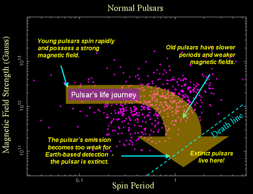
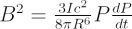
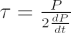

Pulsars are born in collapsing core supernova explosions. The rotation rate of the core-collapse increases enormously through conservation of angular momentum, and new-born pulsars typically spin at more than 60 times a second (60 Hz). Over the next few million years, they emit magnetic dipole radiation which causes their rotation to slow. Eventually, the rotation rate reaches a point where the pulsar ceases to emit radio emission and is no longer detectable from Earth. The pulsar is now said to be ‘extinct’.

Astronomers can measure the spin period (P) of a pulsar to such high accuracy that the rate of change of the period can usually be determined with a year or so of observations. Knowing the period and its rate of change (dP/dt) allows us to infer the magnetic field strength (B) of the pulsar since the only significant source of energy loss is the magnetic dipole radiation. The magnetic field strength is given by:

where I is the moment of inertia of the neutron star, c is the speed of light and R is the radius of the neutron star. Observations of young pulsars in supernova remnants suggest a typical magnetic field strength of order 1012 Gauss = 108 Tesla for these objects.
Assuming pure magnetic dipole radiation, the characteristic age (τ) of a pulsar can also be estimated from the spin period and its rate of change:

However, this relation is only valid if the initial spin period is much smaller than that currently observed, and the rate of change of the period is not corrupted by gravitational effects. There is an implicit assumption in this formula that the currently observed period is much longer than the original period and that the “braking index” is 3.